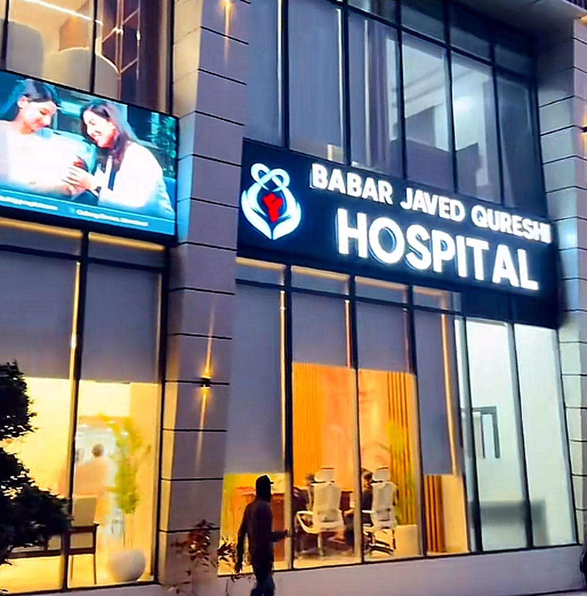
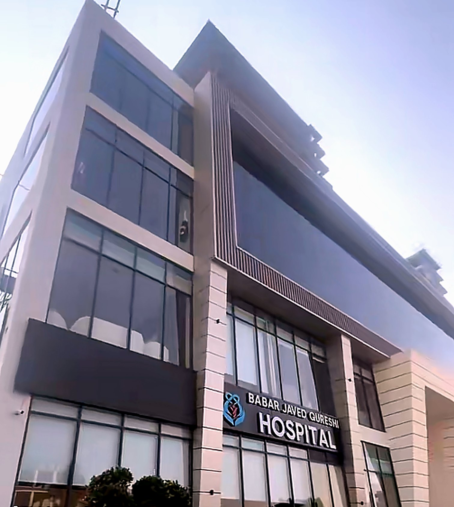
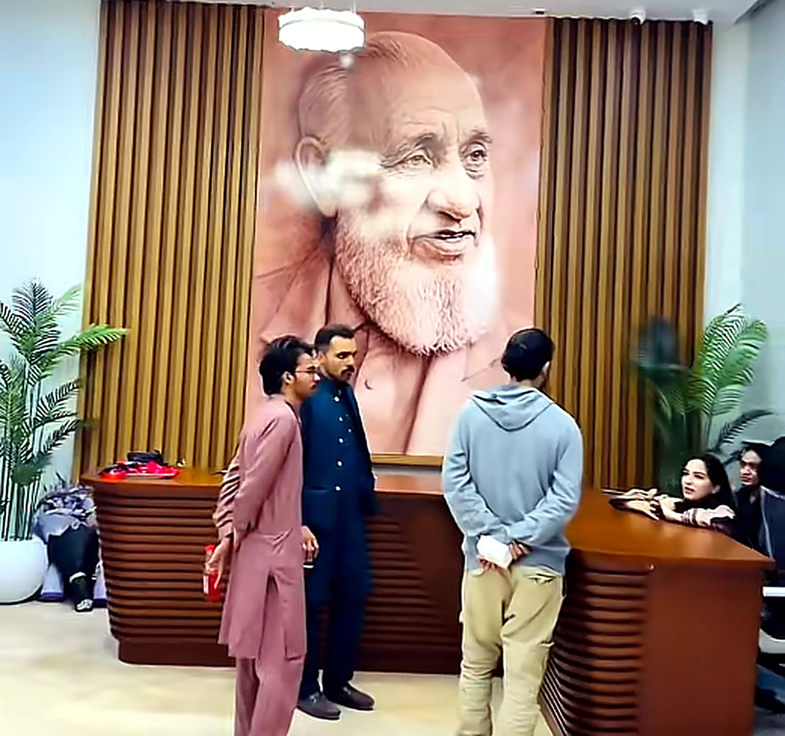

Free Dialysis Centre
Regular haemodialysis for patients with kidney failure, provided free of charge in a clean, comfortable unit.
About free dialysis →
Care For All. Luxury By Choice.
Babar Javed Qureshi Hospital brings multi-specialty care, a free dialysis centre and calm, modern facilities to Gulberg Greens and the Islamabad Expressway community.
Consultants across key specialties under one roof
Haemodialysis for patients who need it, free of charge
A new, purpose-built hospital with refined interiors
Dignity, privacy and clear communication at every step

Babar Javed Qureshi Hospital (BJQ Hospital) is a multi-specialty hospital in Gulberg Greens, Islamabad. Our promise is simple: Care For All. Luxury By Choice.
Every patient who walks through our doors receives the same standard of clinical care, from a free dialysis session to a specialist consultation. Patients and families who want more comfort can choose premium rooms and amenities, but good medicine is never an upgrade.
Consultations, diagnostics and treatment in one place, so you spend less time travelling and more time getting better.
Regular haemodialysis for patients with kidney failure, provided free of charge in a clean, comfortable unit.
About free dialysis →Diagnosis and ongoing care for fever, infections, diabetes, blood pressure and other everyday conditions.
Women's health, antenatal check-ups and maternity care with privacy and respect.
Child-friendly care for newborns, infants and children, from vaccinations to illness.
Planned and day-case procedures in modern operating facilities, with clear pre- and post-operative guidance.
Blood tests and diagnostic investigations on site, so results reach your doctor quickly.
People living with kidney failure often need haemodialysis two or three times every week. The cost can overwhelm a family. At BJQ Hospital, dialysis is provided free so that patients can keep their treatment going and families can keep their stability.
How free dialysis worksCall or visit the hospital reception and ask for the Dialysis Centre.
Share your recent kidney reports and your doctor's dialysis prescription.
Our team confirms your sessions and explains what to expect on the day.
The same clinical standard for every patient, including free dialysis for those who need it.
Premium rooms and amenities are available if you want them, and never required.
No long trip into the city. Care is right here in Gulberg Greens.
A bright, welcoming reception and quiet waiting areas designed to put you at ease.
Our reception combines warm timber panelling, natural light and a large portrait artwork, setting a calm tone for every visit.
Our reception team will guide you to your consultation, test or dialysis session and answer questions about appointments, reports and visiting.
Plan your visit
Look for the modern glass-fronted building with the illuminated Babar Javed Qureshi Hospital sign above the main entrance.
BJQ Hospital (Babar Javed Qureshi Hospital) is in Gulberg Greens, Islamabad, close to the Islamabad Expressway. It is a modern glass-fronted building with the illuminated Babar Javed Qureshi Hospital sign above the main entrance.
Yes. BJQ Hospital runs a Free Dialysis Centre for patients with kidney failure who need regular haemodialysis. Contact the hospital reception to ask about registration and session availability.
BJQ stands for Babar Javed Qureshi, the name of the hospital: Babar Javed Qureshi Hospital, Gulberg Greens, Islamabad.
You can request an appointment using the form on this page, by calling the hospital reception, or by visiting the reception desk at the hospital in Gulberg Greens, Islamabad.
It is our promise: every patient receives the same standard of medical care, including free dialysis for those who need it, while patients who prefer premium rooms and amenities can choose them.
Tell us what you need and our reception team will contact you to confirm a time. For a medical emergency, go to the nearest emergency department or call 1122 straight away.